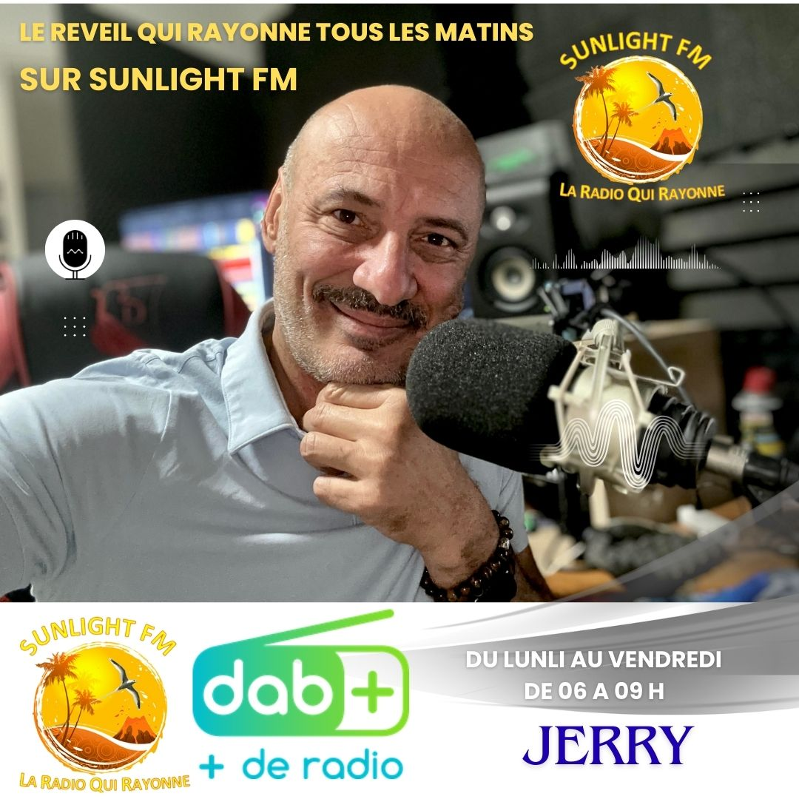
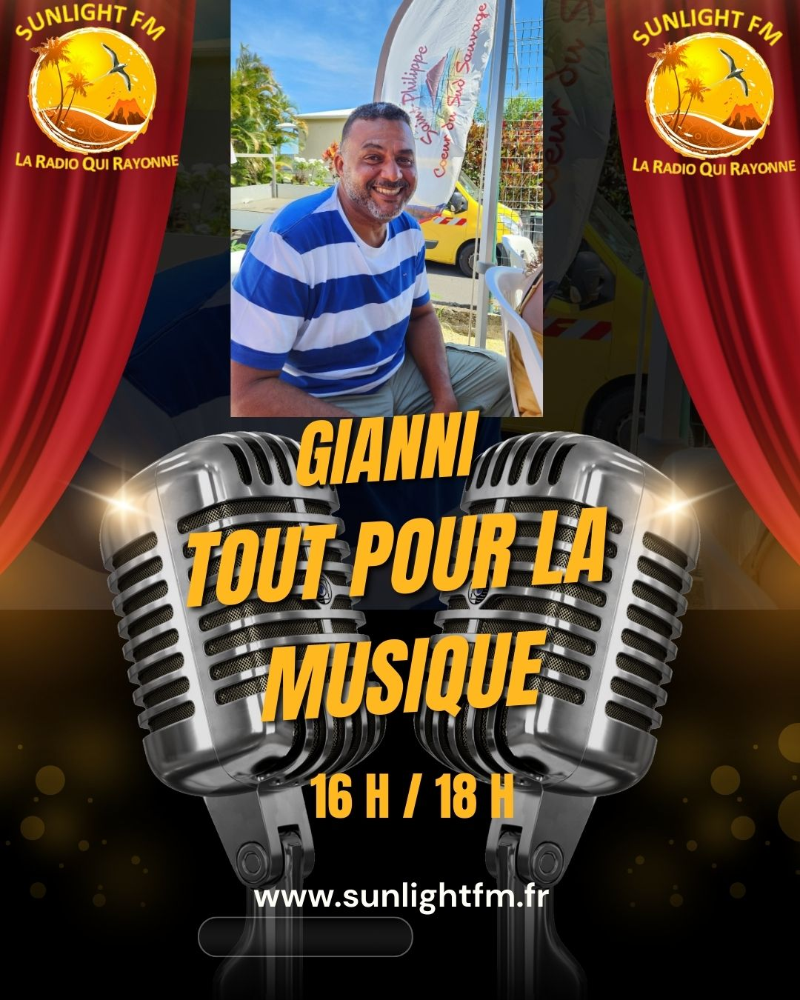
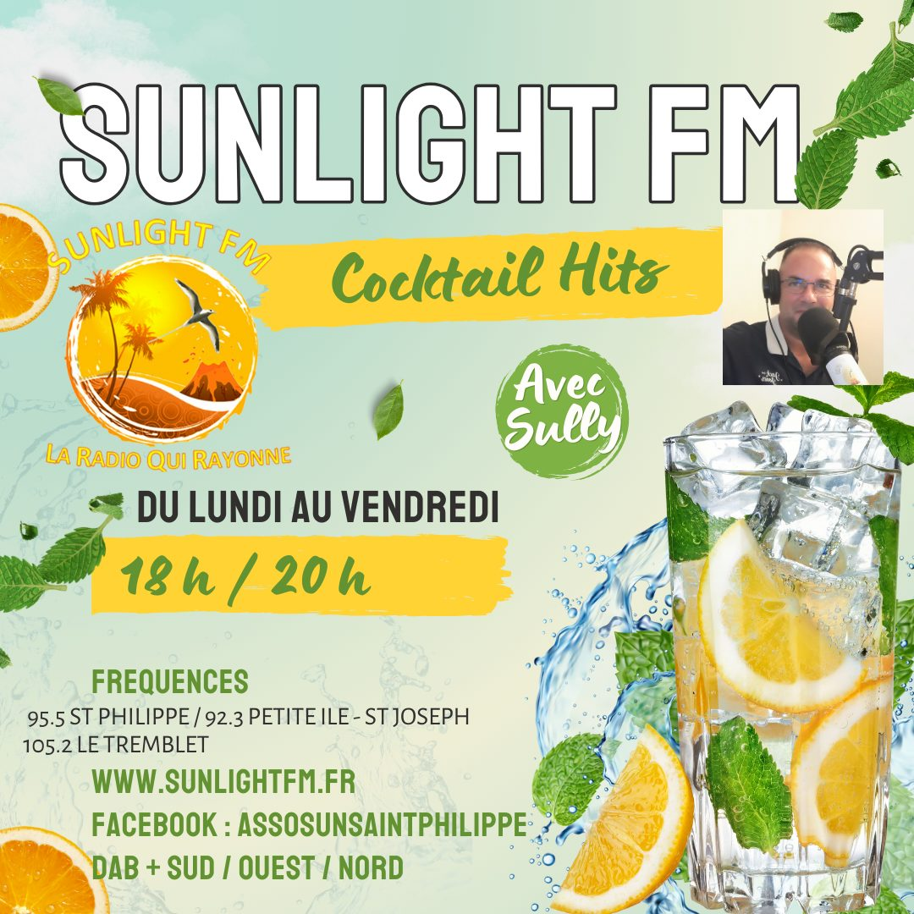
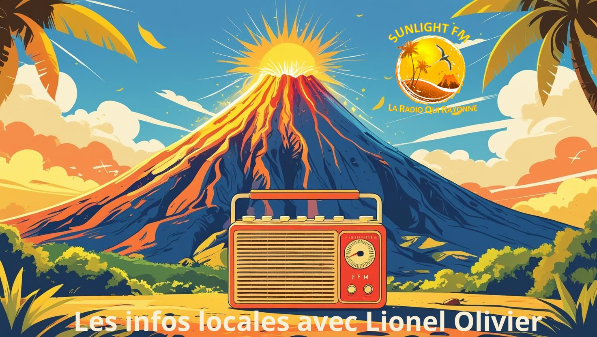
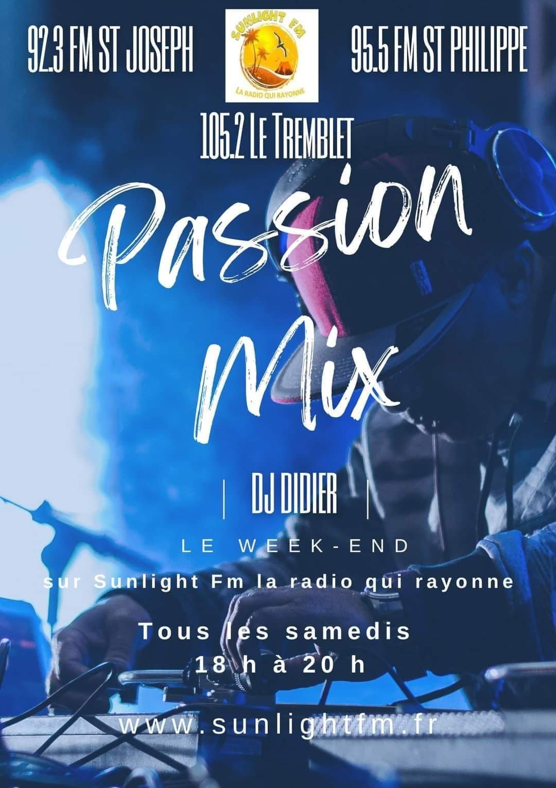
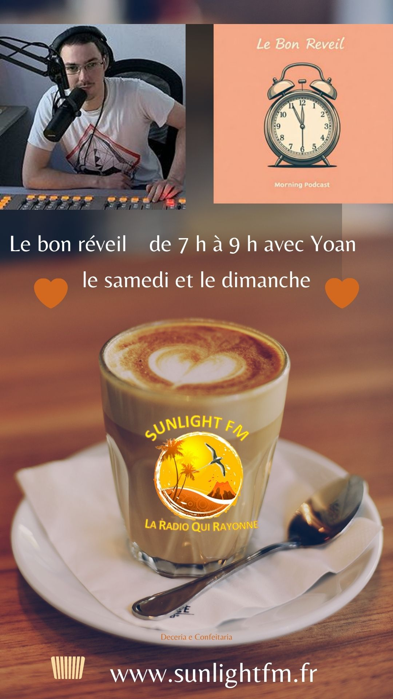
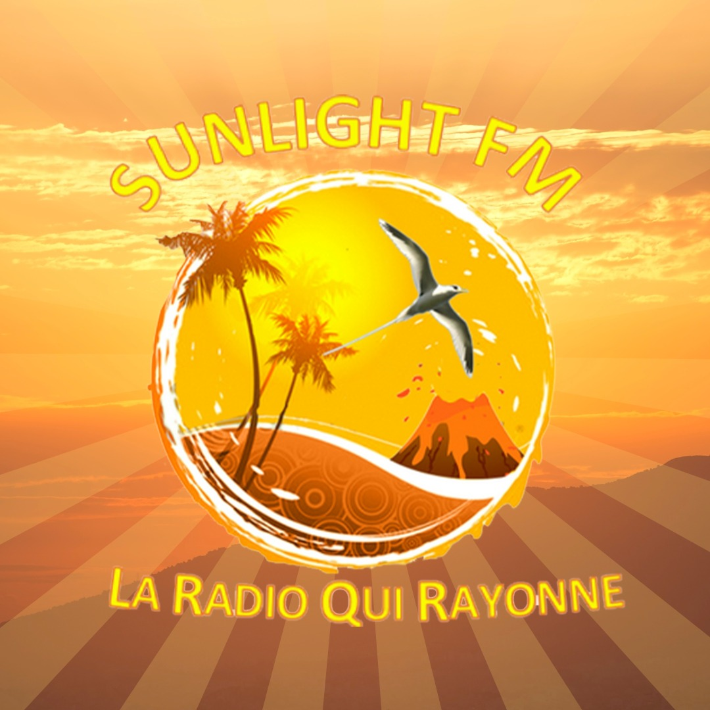

Matinale
Le Réveil qui rayonne
Démarrez votre journée avec Jerry — actu locale, bonne humeur et les meilleurs sons.
Votre radio locale DAB+ incontournable dans le Grand Sud, l'Ouest et le Nord de la Réunion. Émissions variées, invités locaux et une diffusion non-stop pour toute l'île.
Profitez de notre diffusion DAB+ sur vos fréquences locales. SunLight FM vous accompagne tout au long de la journée avec des émissions phares, des invités exclusifs et la meilleure musique de l'île.
Des programmes variés animés par des voix locales passionnées, tous les jours sur SunLight FM.

Démarrez votre journée avec Jerry — actu locale, bonne humeur et les meilleurs sons.

Avec Gianni, plongez dans l'univers musical de la Réunion et des hits internationaux.

Rencontres, interviews et sujets de fond — le magazine qui fait parler l'île.

Avec Lionel Olivier, restez informé de toute l'actualité réunionnaise en temps réel.
Disponible sur Google Play, l'application SunLight FM vous permet d'écouter votre radio préférée partout et à tout moment — en déplacement, au travail ou à la maison.
Scannez ce QR code pour télécharger l'application directement sur votre smartphone
Restez connecté avec SunLight FM pour ne rien manquer de nos actualités, coulisses et événements locaux.
Découvrez les moments forts de SunLight FM à travers notre galerie photos exclusive.



Découvrez les partenaires qui soutiennent SunLight FM et contribuent à la richesse de nos programmes. Ensemble, nous faisons rayonner la radio locale sur toute l'île de la Réunion.
Vous souhaitez devenir partenaire de SunLight FM et toucher votre audience locale ?
En savoir plus sur le partenariat